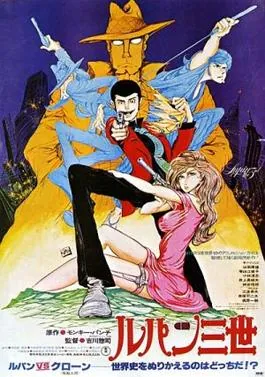

The genetics
Cloning is the core of the film; its Japanese title means 'Lupin vs. the Clone'. The villain Mamo has prolonged his life for millennia by transferring himself into successive clones, has cloned famous historical figures and even Lupin himself, and wants artefacts like the Philosopher's Stone because his cloning is imperfect: each copy loses a little genetic information and comes out weaker and more malformed. He is a megalomaniac who blackmails the superpowers, triggers an earthquake and tries to launch nuclear missiles so that he and Fujiko can repopulate the world; the US government is also interested in his cloning secrets. Cloning thus appears as a tool of immortality and godlike ambition, with hubris punished at the end. The idea that copies degrade with each generation echoes real worries about the ageing of cloned cells, but the film's cloning of adults with their memories is pure fantasy.
How genetics is portrayed
- Overall portrayal of genetics
- negative Cloning is the instrument of a hubristic villain's quest for immortality and domination, and its imperfection (degeneration) is stressed; the US government's wish to obtain it is also sinister.
- Outcome of the genetic intervention
- negative Mamo's cloning sustains a tyrant who manipulates history, blackmails governments, triggers an earthquake and nearly launches nuclear missiles; his clones also degenerate.
- Mamo (Howard Lockewood)
- villain Aim: power (negative). Mamo clones himself for millennia to stay immortal, clones historical figures and Lupin, and plans to repopulate the Earth after a nuclear war. He is staged as a megalomaniac monster whom Lupin destroys.
The story
Inspector Zenigata finds that the master thief Lupin III, supposedly executed, has escaped again. Lupin steals the Philosopher's Stone from the Giza pyramids, but Fujiko Mine takes it from him for a mysterious client, Mamo, who finds it is a fake. Mamo's forces destroy the gang's hideout and capture Lupin and Fujiko; American agents reveal that Mamo has blackmailed them for cloning research. On Mamo's Caribbean island Lupin finds clones of historical figures such as Hitler and Napoleon. Mamo, a recluse who claims to have lived for ten thousand years by cloning himself and steering human history, wants immortality and plans to repopulate the Earth with Fujiko after a nuclear war. In the end Lupin destroys Mamo's cloned body and then the giant brain of the original Mamo, which drifts toward the sun.